SANTENSOR / V4 / EVIDENCIA DE REVISIÓN
Anatomía de una decisión.
Recorrido continuo de cinco escenas. Los documentos de cristal se convierten en una aplicación ejecutable: entrada editable, reglas locales, herramienta simulada, revisión humana, fallo 503, recuperación y trazabilidad.
Preview temporal para revisión. La aceptación artística corresponde al propietario. Los vídeos muestran navegadores automatizados reales; el recorrido móvil usa emulación. La alternativa 2.5D utiliza renders propios del mismo archivo óptico. No se ejecuta inferencia de IA.
Escritorio · alternativa 2.5D
Grabación real de Chromium. 34 segundos de recorrido; 11.6 MB. Sin validación en teléfono físico.
Descargar vídeo ↗ · Cronología y modo de render ↗

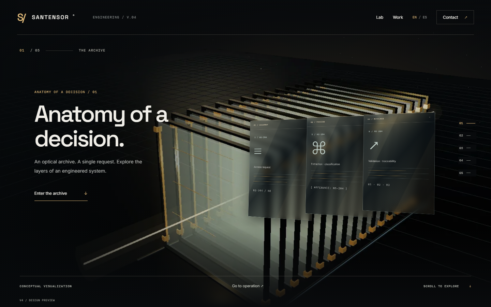


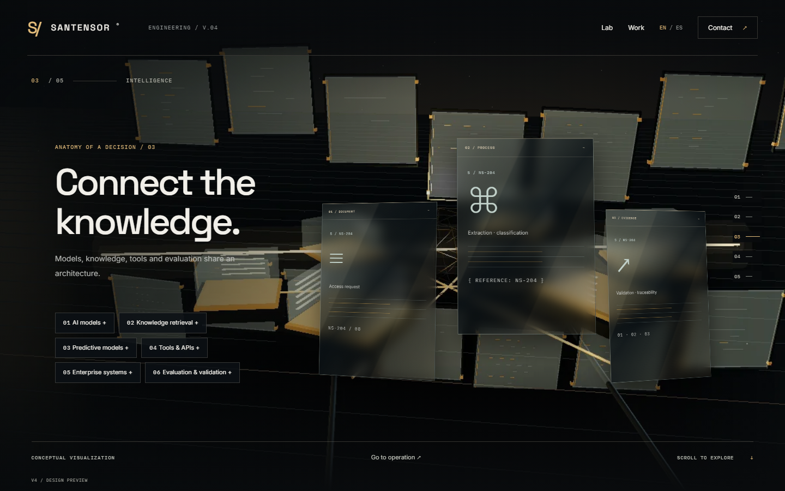

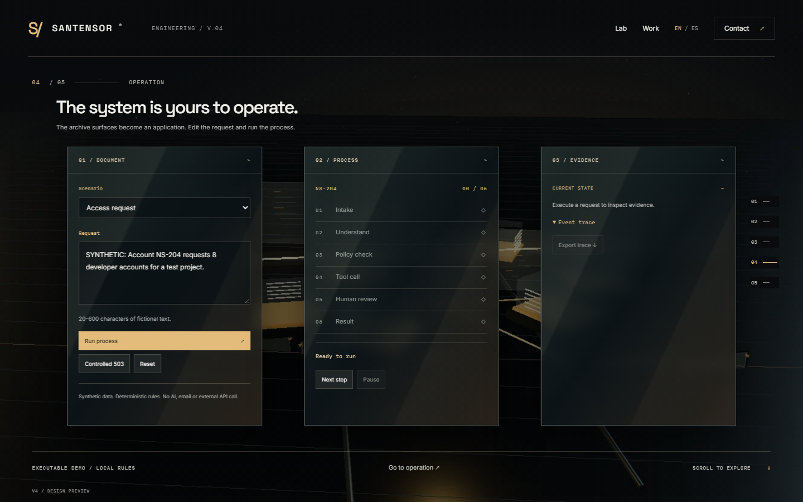

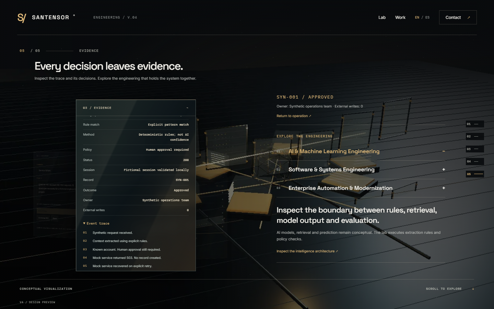

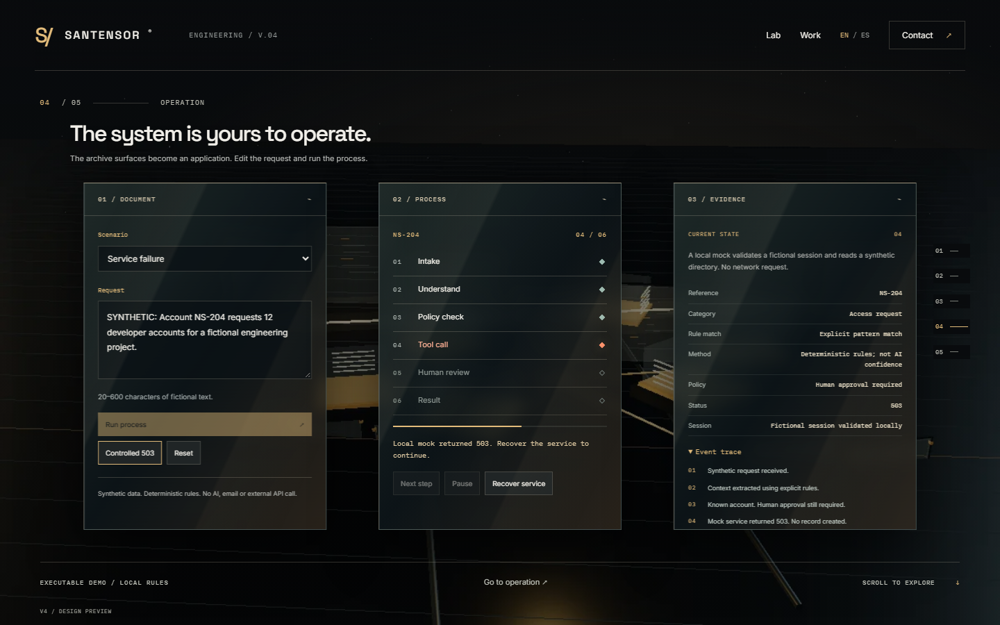

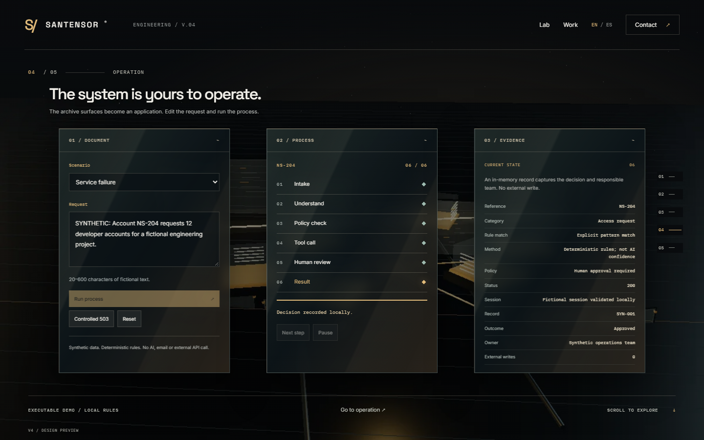
Móvil emulado · 390 × 844
Grabación real de Chromium. 33 segundos de recorrido; 3.8 MB. Sin validación en teléfono físico.
Descargar vídeo ↗ · Cronología y modo de render ↗

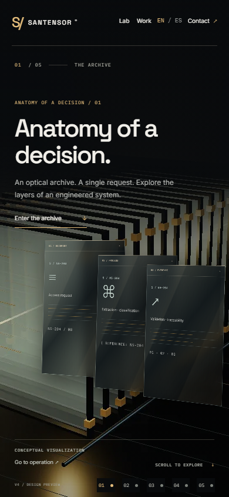

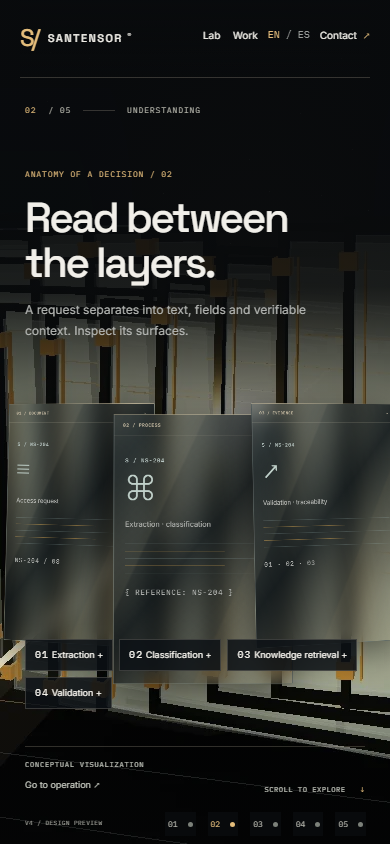

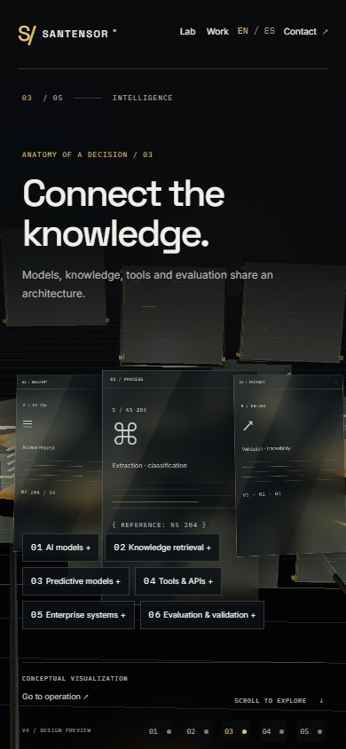

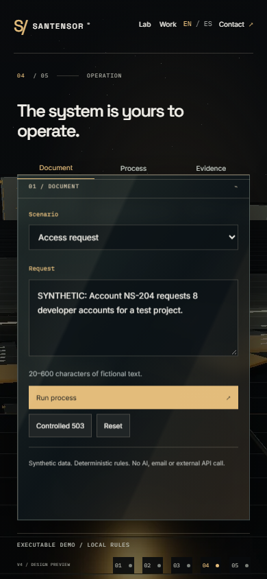

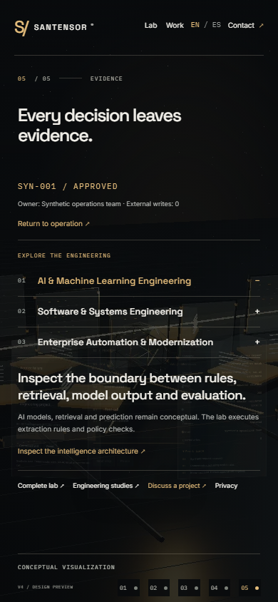

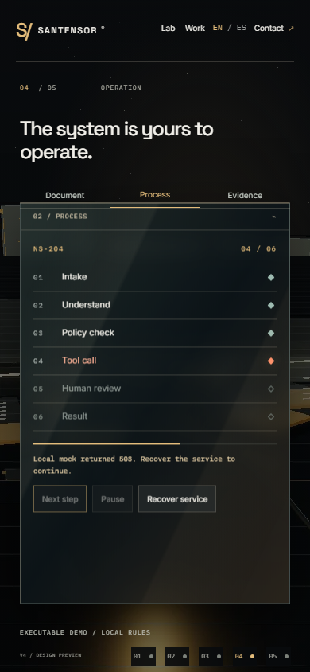

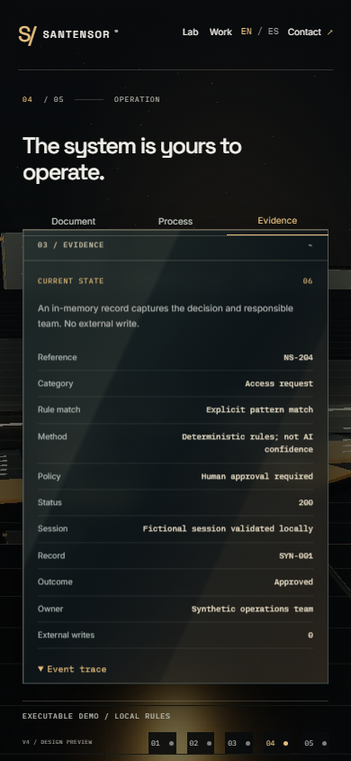
Escritorio · WebGL forzado
Grabación real de Chromium. 54 segundos de recorrido; 21.5 MB. Sin validación en teléfono físico.
Descargar vídeo ↗ · Cronología y modo de render ↗

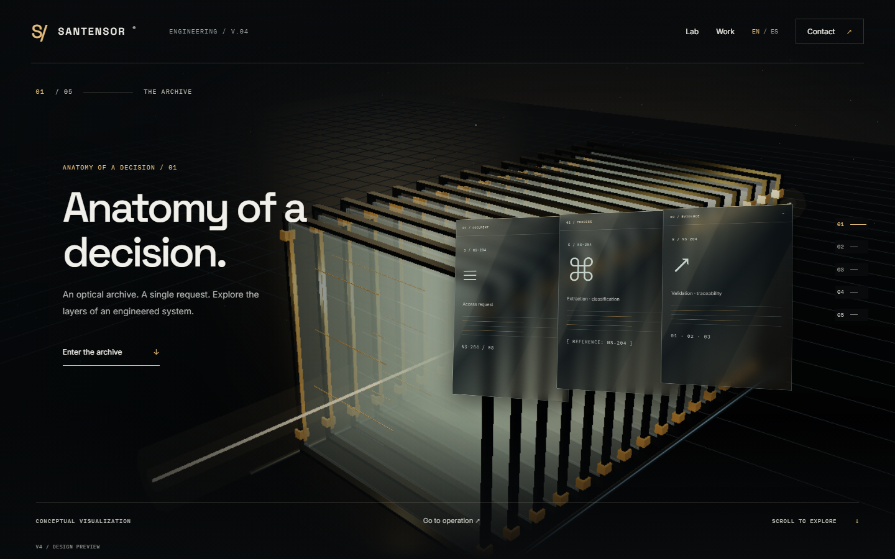

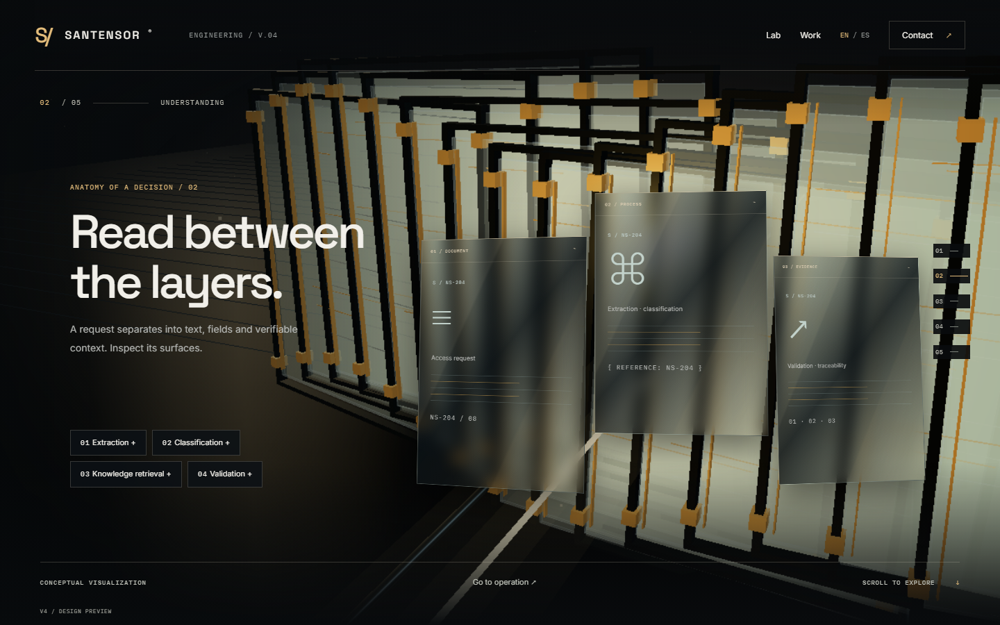

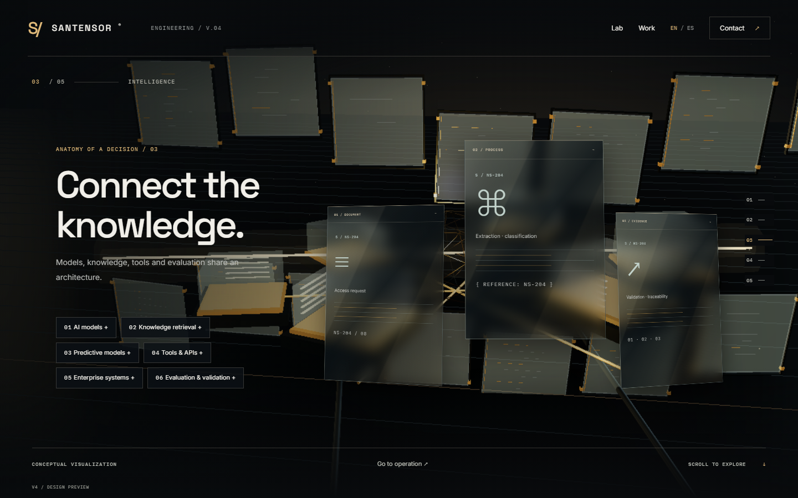

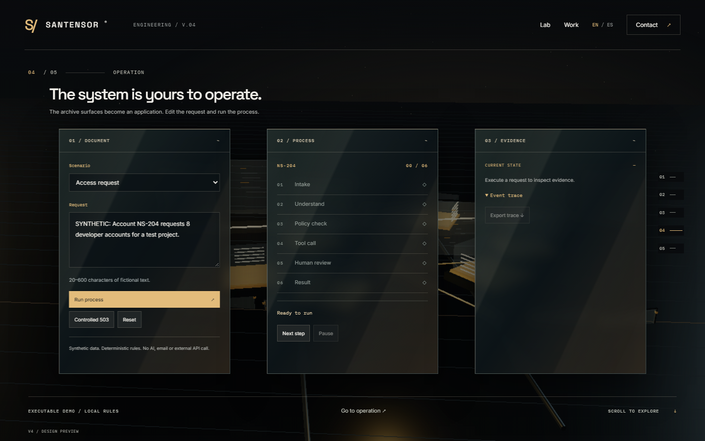

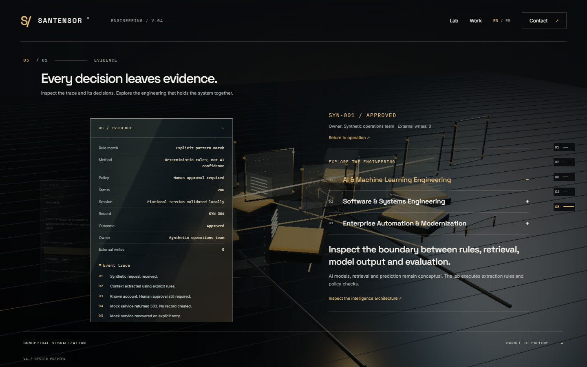

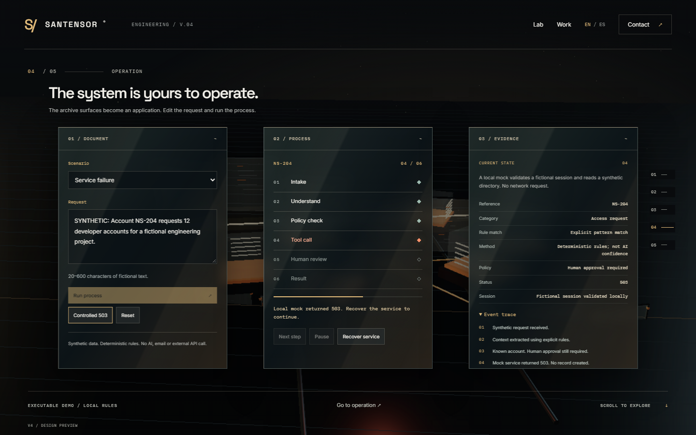

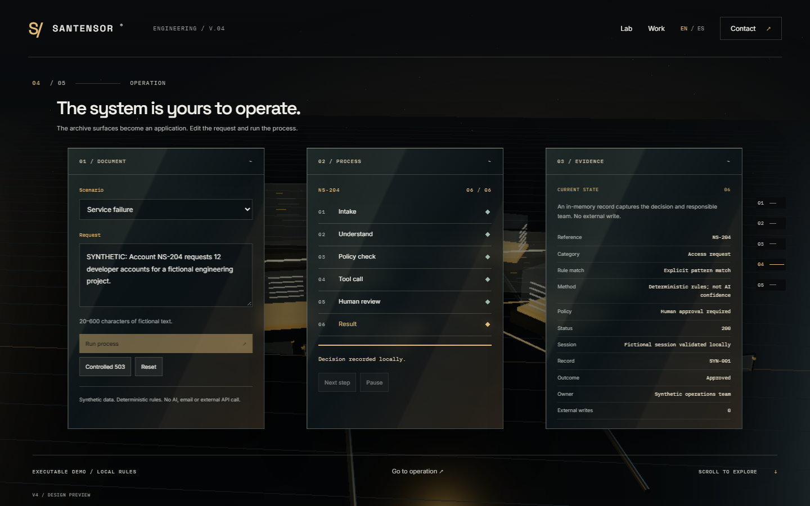
Pruebas, rendimiento y referencias
- Mediciones de carga, LCP, CLS y cuadros ↗
- Reversibilidad del mundo WebGL ↗
- Persistencia de superficies y posiciones intermedias ↗
- Accesibilidad EN/ES: 1440 px, 768 px, 390 px, 360 px.
- Referencias consultadas y prototipo inaccesible ↗
- Ejecución, error y recuperación ↗
La prueba WebGL forzada comprueba el motor 3D aunque este entorno usa renderizado por software. No representa el rendimiento de una GPU física. La preview no modifica producción, DNS, CNAME, el entrenador ni Railway.